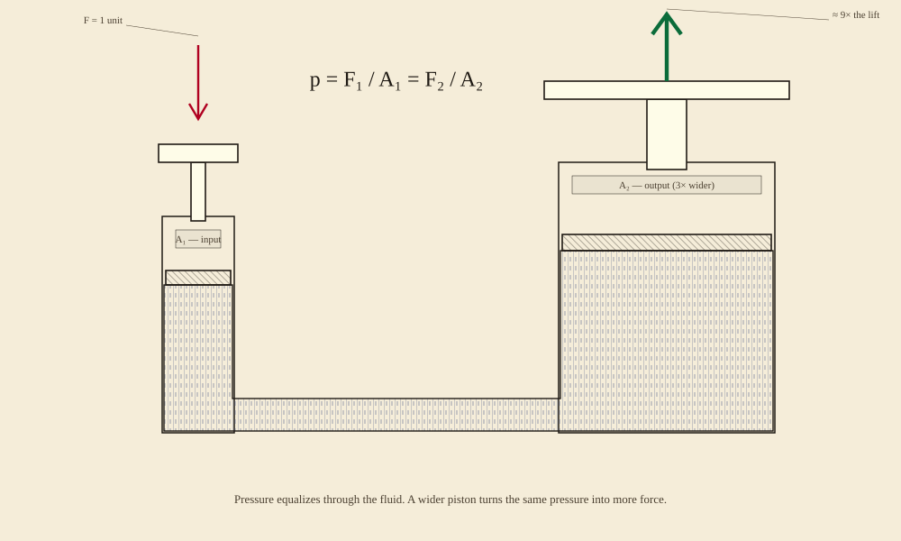

Pascal's principle, drawn in pencil on parchment. You asked Claude. Glyph drew it — from a compose spec. Two cylinders, one fluid, one equation. The reason a single foot can lift a car.
"Draw me a hydraulic press — Pascal's principle. Two cylinders connected by a pipe, one narrow on the left (input) and one wide on the right (output). Hatched fluid filling both. A small downward force on the left turns into a much larger upward force on the right. Pencil-on-parchment style."
— what to say to your AI agent. Claude writes the Glyph compose spec; the compose compiler emits patterns, silhouette paths, frames, and annotations into one byte-locked SVG.

RFC #9's pattern fills + silhouette paths + frame schematic + annotation leaders cover this entire engineering drawing.
A 6×10 tiled pattern of vertical short strokes — reads as still water. One U-shaped silhouette-path (8 line commands) traces the boundary; the pattern fills it. The pipe and both cylinders share one continuous closed region.
Each cylinder is a frame mark (RFC #7) with a labeled header bar. The pistons inside are pattern-filled rectangles (a 135°-rotated hatch reads as machined steel) plus rod and platform plates in cream.
Two leader-line annotations with italic labels (RFC #7). Two force arrows as silhouette-paths — red downward on the input, green upward on the output. The middle holds the equation, set in compose's text mark.
Claude writes the compose JSON; Glyph's compose compiler turns it into byte-identical SVG. Same fluid pattern, same arrow angles, every CI run.
// eng-hydraulic.json — the fluid pattern + U-shape { "compose": { "viewBox": { "width": 1000, "height": 600 }, "theme": { "preset": "pencil-parchment" }, "defs": { "patterns": [ { "id": "p-fluid", "width": 6, "height": 10, "children": [ { "kind": "line", "x1": 0, "y1": 0, "x2": 0, "y2": 10, "stroke": "#3b4d80" } // ... + a half-stroke for density ] } ] }, "children": [ // 1. frame · small cylinder, "A₁ — input" // 2. frame · large cylinder, "A₂ — output (3× wider)" // 3. fluid silhouette (U-shape, p-fluid filled) // 4. small piston head + rod + handle // 5. large piston head + rod + platform // 6. F_in arrow (red, down) // 7. F_out arrow (green, up, 4.4× thicker) // 8. two annotation-leaders // 9. equation + caption text ] } }
Everything you see on the press — the hatching, the U-shape, the force arrows, even the leader-line angles — is in the compose spec. View on GitHub.
Byte-stable across Ubuntu / macOS / Windows × Node 20 / 22. The compose compiler emits patterns into <defs>, then walks children, attaching pattern URLs as fills.
Compose extends naturally to other classical machines. Just frames + pattern fills + silhouette paths.
"Draw me a hydraulic jack — same Pascal's principle, but with a check valve and a reservoir. Show one stroke filling the lift chamber. Pencil-on-parchment."
"Draw me a pneumatic cylinder driven by compressed air. Single-acting and double-acting versions, side by side. Same pencil style."
"Draw me a Stirling engine — two pistons, a regenerator between them, hot side and cold side. Hatched gas in the cylinders. Show one full thermodynamic cycle as four panels."
"Draw me a Roman arch carrying a load. Stress arrows showing how the load is transferred to the abutments. Same pencil aesthetic."